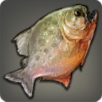

|
|
|
Malm Kelp |
| 4 Coastlines |   |
| This dark green variety of seaweed found in all five of Eorzea's seas has been known to grow up to a malm in length. |
This dark green variety of seaweed found in all five of Eorzea's seas has been known to grow up to a malm (1760 yalms) in length. |
|
Crayfish |
| 2 Rivers | |
| A brown-carapaced freshwater crustacean commonly found in the rivers and lakes of Aldenard. |
A brown-carapaced freshwater crustacean commonly found in the rivers and lakes of Aldenard. So eager are crayfish to grasp at anything that may happen by, fishers boast that they need not even bait their lines to catch the creatures. |
|
Chub |
| 3 Rivers S (1) | |
A common freshwater fish found in rivers across Eorzea. Prefers the slow-moving waters found near a river's mouth to the rapids found upstream.
[Suitable for display in aquariums tier 1 and higher.] |
When spawning, the head, belly, and tail of this common freshwater fish take on a vibrant red hue─a color which, across Eorzea, traditionally represents happiness and longevity. Because of this, chubs are often given as gifts to newlyweds. |
|
Merlthor Goby |
| 3 Coastlines | |
| A vividly striped saltwater fish commonly found in the Strait of Merlthor. |
A vividly striped saltwater fish commonly found in the Strait of Merlthor. The gobies are situated near the bottom of the food chain and feed a great deal of larger species. This makes the fish an ideal choice for mooching. |
|
Lominsan Anchovy |
| 3 Coastlines | |
| These small saltwater fish form massive schools resembling colossal sea creatures to discourage predators from approaching. |
For many generations, Lominsan anchovies were not actively caught, due to their insignificant size. However, after a Qiqirn deckhand discovered one rotting in the corner of the bilge hold on a fishing vessel and found it to be sublime, the demand for salt-cured Lominsan anchovies has risen dramatically. |
|
Striped Goby |
| 4 Rivers | |
| A brightly striped freshwater fish native to the rivers and lakes of the Coerthas and Mor Dhona regions. |
A brightly striped freshwater fish native to the rivers and lakes of the Coerthas and Mor Dhona regions. Coerthan legend states that the striped goby was not always a fish, but once a brightly plumed bird cast to the bottom of the seas by the Fury for flying too near Her realm. |
|
Dwarf Catfish |
| 4 Rivers | |
| An undersized variety of catfish found in still, swampy waters across Aldenard. |
An undersized variety of catfish found in still, swampy waters across Aldenard. The Padjali name for this fish is “gee-gee,” supposedly taken from the grinding sound created when it moves its fins. |
|
Finger Shrimp |
| 4 Coastlines | |
| A common saltwater shrimp found in the plankton-rich waters of the Sea of Jade. |
A common saltwater shrimp found in the plankton-rich waters of the Sea of Jade. Boiled in seawater and topped with a squeeze of fresh Thanalan sun lemon is the preferred method of preparation. |
|
Bone Crayfish |
| 5 Rivers | |
| A white-carapaced freshwater crustacean commonly found living in caves or deep lakes where sunlight is absent. |
A white-carapaced freshwater crustacean commonly found living in caves or deep lakes where sunlight is absent. After molting, the new shell is so thin and transparent that one can see the creature's organs. |
|
Princess Trout |
| 5 Rivers |  |
| Unlike other freshwater trout which make their habitat in swift-flowing rivers, the silver princess trout prefers the relative seclusion of inland lakes. |
Unlike other freshwater trout, which make their habitat in swift-flowing rivers, the silver princess trout prefers the relative seclusion of inland lakes. This has made the wavekin a favorite amongst recreational fishers who seek a more relaxing pastime. |
|
Ocean Cloud |
| 6 Coastlines | |
| A semi-transparent jellyfish commonly found in the Strait of Merlthor, where it goes through nine separate stages of development before reaching adulthood. |
A semi-transparent jellyfish commonly found in the Strait of Merlthor, where it goes through nine separate stages of development before reaching adulthood. |
|
Dusk Goby |
| 6 Rivers | |
| A hardy species, the dusk goby can survive not only in freshwater, but also the mouths of rivers, where the tides can bring saltwater malms inland. |
A hardy species, the dusk goby can survive not only in freshwater, but also the mouths of rivers, where the tides can bring saltwater malms inland. Depending on the salt content of the water it lives in, the color of its scales can vary from a deep amber to a golden orange. |
|
Sea Cucumber |
| 7 Coastlines | |
| A purple, spiny, slug-like creature found in the shallows off of the island of Mazlaya, and treasured in the Far East as a delicacy. |
A purple, spiny, slug-like creature found in the shallows off of the island of Mazlaya, and treasured in the Far East as a delicacy. |
|
Harbor Herring |
| 7 Coastlines S (1) | |
This particular variety of herring will gather in busy harbors to feed on the small sea creatures which consume the waste dumped from ships.
[Suitable for display in aquariums tier 1 and higher.] |
This particular variety of herring will gather in busy harbors such as Limsa Lominsa's Galadion Bay to feed on the small sea creatures which consume the waste dumped from ships. |
 |
Pipira |
| 7 Rivers | |
| A fierce freshwater fish most commonly found in Gridania's Jadeite Flood and Black Tea Brook. |
A fierce freshwater fish most commonly found in Gridania's Jadeite Flood and Black Tea Brook. Though not large or strong enough to inflict any real damage, pipira will bite the ankles of anyone who steps near them. |
|
Crimson Crayfish |
| 8 Rivers | |
| A crimson-carapaced freshwater crustacean commonly found in the streams and lakes of Vylbrand. |
A scarlet-carapaced freshwater crustacean commonly found in the streams and lakes of Vylbrand. The wavekin, however, is not born crimson─its shell slowly turning from blue to grey to brown to red as it ages. |
|
Vongola Clam |
| 8 Coastlines | |
| A tasty bivalved mollusk commonly found on and near the island of Bianaq. |
A bivalved mollusk native to the island of Bianaq, but found in all the five seas. Its rich, nutty flavor, in addition to its wide availability, have seen the vongola clam become a common addition to chowders and stews across Eorzea. |
|
Gudgeon |
| 8 Rivers | |
| Each night, this freshwater fish will use its fins to dig a shallow burrow in river or lake beds, where it will sleep, relatively safe from predators. |
Each night, this freshwater fish will use its fins to dig a shallow burrow in river or lake beds, where it will sleep, relatively safe from predators. Because of this characteristic, La Noscean fishers often playfully refer to the wavekin by another name─the “cravenfish.” |
|
Coral Butterfly |
| 9 Coastlines S (1) | |
A colorful saltwater fish commonly found in the warm seas around the island of Bianaq. Not known for its flavor, the wavekin is most often kept as a pet.
[Suitable for display in aquariums tier 1 and higher.] |
A colorful saltwater fish commonly found in the warm seas around the island of Bianaq. Not known for its flavor, the wavekin is most often put on display in aquariums. |
|
Brass Loach |
| 9 Lakes | |
| This long, thin, brass-colored freshwater fish is most commonly found in the Yafaem Saltmoor and surrounding rivers and lakes. |
This long, thin, brass-colored freshwater fish is believed to be native to the rivers and lakes of the Yafaem Saltmoor. The thick coat of protective slime covering the loach's body discourages most predators from feeding on the tiny wavekin...most predators, that is, except hungry Lalafellin farmers who consider the brass loach a delicacy. |
|
Moraby Flounder |
| 10 Coastlines | |
| A flat bottom-feeder commonly found in the relatively calm waters of Moraby Bay. |
Legend states that once a normal fish, the flounder was stepped upon by the Wanderer during one of His journeys, and left for dead. Upon finding the fish, the Navigator succeeded in breathing life back into the denizen of the deep, but could not restore it from its new flattened form. |
|
Maiden Carp |
| 10 Rivers | |
| Large schools of these dark silver fish can be found in the White Maiden and her tributaries. |
Large schools of these dark silver fish can be found in the White Maiden and her tributaries. Their tendency to gather in great numbers makes them quite easy to catch, and as such they have been a staple for those living in the Twelveswood since the time of the first settlers. |
|
Abalathian Smelt |
| 35 Rivers | |
| A tiny freshwater fish native to the lakes and rivers fed by runoff from Abalathia's Spine. |
A tiny freshwater fish native to the lakes and rivers fed by runoff from Abalathia's Spine. Too small to fillet, the fish are usually tossed into stewpots and eaten whole. |
|
Blindfish |
| 31 Lakes | |
| Commonly found in the sea caves and grottoes of Vylbrand, the eyes of this freshwater fish regressed long ago, earning the specimen its name. |
Commonly found in sea caves and grottoes, the eyes of this freshwater fish regressed long ago, earning the specimen its name. As it has lost its ability of sight, it catches its prey, rather, by sensing changes in the flow of the water around it. |
|